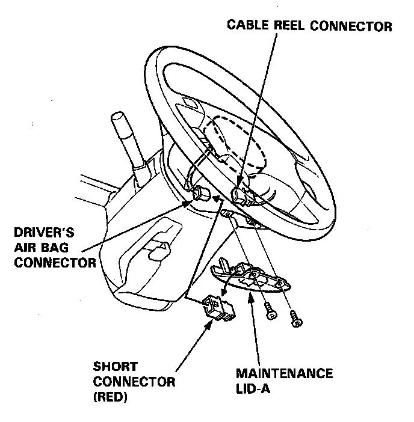
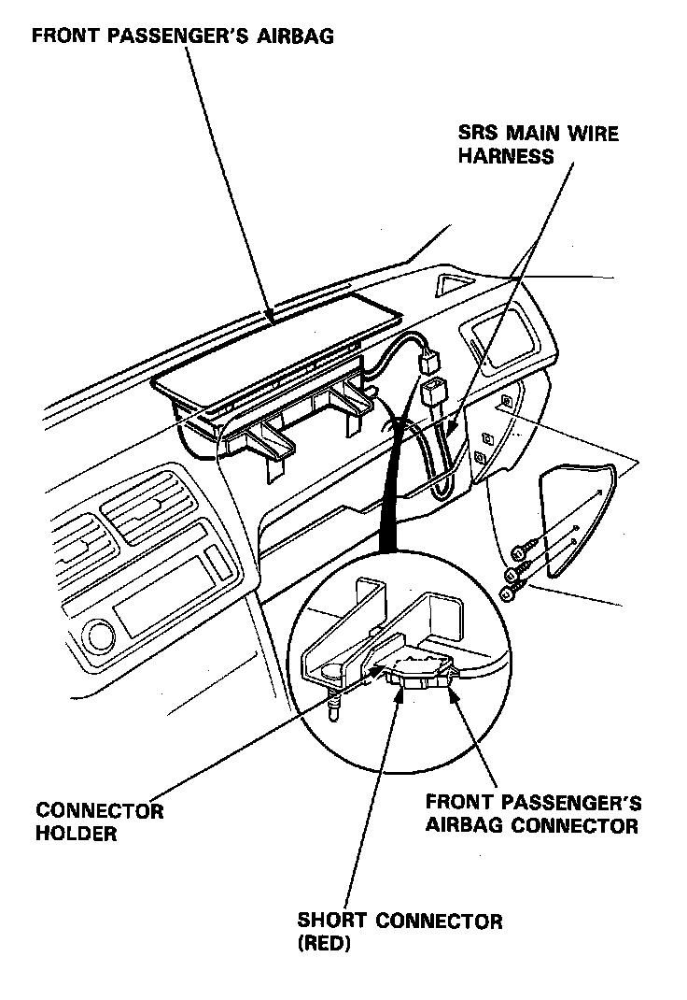
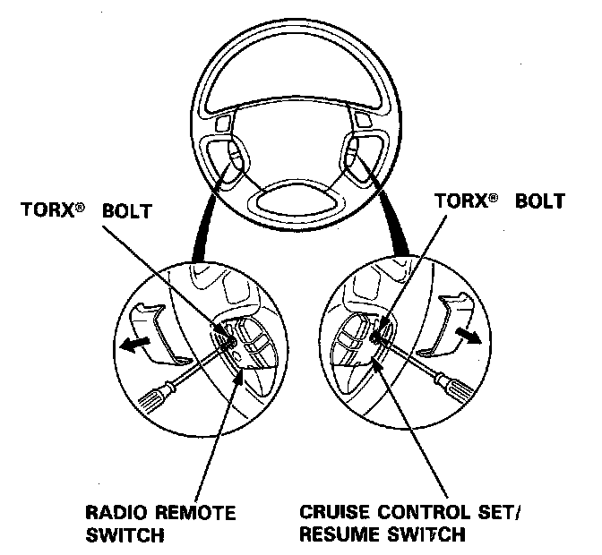
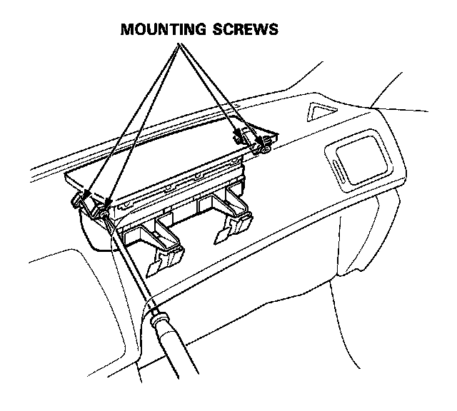
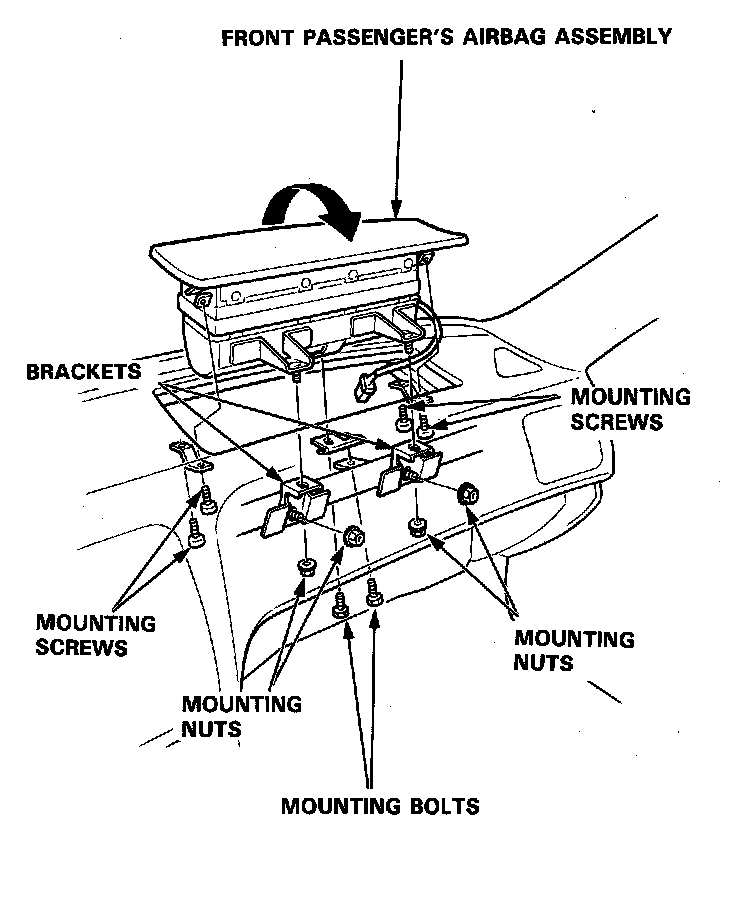

Airbag Assembly Removal
Airbag Removal
WARNING: Store a removed airbag assembly with the pad surface up, if the airbag is improperly stored face down, accidental deployment could propel the unit with enough force to cause serious injury.
CAUTION:
- Do not install used SRS parts from another car. When repairing, use only new SRS parts.
- Carefully inspect the airbag assembly before installing. Do not install an airbag assembly that shows signs of being dropped or improperly handled, such as dents, cracks or deformation.
- Always keep the short connector on the airbag connector when the harness is disconnected.
- Do not disassemble or tamper with the airbag assembly.
NOTE: Before disconnecting the battery, be sure you get the customer's antitheft radio code number [L, LS model].
Driver's Airbag:
1. Disconnect the battery negative cable, then disconnect the positive cable.
2. Remove the maintenance lid A below the driver's airbag, then remove the the short connector from the lid.
3. Disconnect the connector between the driver's airbag and cable reel.
4. Connect the short connector to the driver's airbag side of the connector.

5. Remove the glove box then disconnect the connector between the front passenger's airbag connector and the SRS main harness.
6. Connect the short connector to the front passenger's airbag side of the connector.

7. Remove the 2 TORX� bolts using a TORX� T30 bit, then remove the driver's airbag assembly.

Front Passenger's Airbag:
8. Remove the 4 mounting nuts and remove the 2 mounting bolts, then remove the bracket.
9. Remove the 4 mounting screws from the front passenger's airbag assembly.

10. Carefully lift the front passenger's airbag assembly out of the dashboard.
